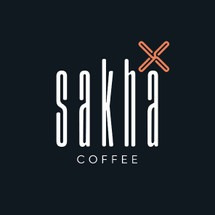

4. Toko Online Sakha Coffee

Sakhacoffee Roastery merupakan supplier kopi terpercaya yang telah berpengalaman lebih dari tiga tahun
dalam mensupport para pecinta dan pelaku bisnis kopi di tanah air. Didukung oleh mesin dan roaster handal,
Sakhacoffee Roastery menyajikan berbagai macam kopi pilihan yang berasal dari varietas unggul di seluruh Indonesia.
Bekerjasama dengan ratusan petani lokal, Sakhacoffee Roastery selalu menjaga kualitas mulai dari pemilihan
‘green beans’ , proses roasting, pengemasan hingga kemudahan pembelian maupun pengiriman melalui berbagai marketplace.
Sakhacoffee Roastery tak hanya ingin kopi dinikmati sebagai minuman pelepas dahaga namun juga cita rasa khas Indonesia
yang selalu dirindukan.
- Respon dari para pembeli